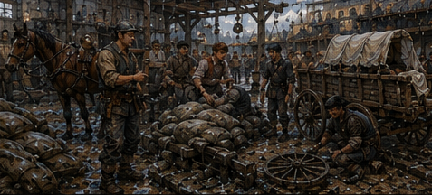

The west storehouse had acquired a hole.
Not a dramatic hole.
No fire. No blood. No creature. A section of roof tile had failed above the rear loading bay, taken two battens with it, and deposited rainwater onto forty-three sacks of dried beans. This was apparently my problem. Rusk stood beneath the damage with a clipboard. He looked at my wrist.
“Limited?”
“Yes.”
“Good.”
“That is not usually the response.”
“You won’t try to fix the roof.”
“I know how roofs work.”
“No.”
“I know enough.”
“No.”
He handed me the clipboard. The top sheet said BEANS. Below that were forty-three lines. I looked at the roof.
Then the beans.
Then Rusk.
“You sent for me to count wet beans.”
“Sacks.”
“That is less interesting.”
“Yes.”
Antonius Vale had three storehouses in West Ward that I knew about, two rented yards, one narrow office, several properties I only understood when rent came due, and a talent for turning other people’s emergencies into categories. The west storehouse was mostly grain, dried goods, cheap cloth, lamp oil, and things waiting for someone to decide they were worth moving. Men worked the front bay around us. A handcart rattled over the threshold. Somebody shouted for twine. Nobody cared that I had returned from Darrowmere.
Good.
Rusk pointed with his pencil.
“Separate dry, damp exterior, wet through, split, contaminated.”
“Contaminated by what?”
“Roof.”
“That is not contamination.”
“Pigeon.”
I looked up.
A pigeon looked down.
“Right.”
“Do not open sacks unless the exterior is wet enough that we need to inspect contents.”
“Why me?”
“Because you can read.”
“So can you.”
“I’m doing the cloth.”
He pointed to the next bay. Six bolts of cheap brown wool sat under a second drip line.
“That is worse.”
“Yes.”
“Why not move everything?”
“We did.”
I looked again.
The sacks were already on pallets away from the leak.
Of course.
The emergency had happened before I arrived. I had been summoned for aftermath. Rusk said, “Vale wants loss estimates before supper.”
“Why?”
“He likes numbers before food.”
“No. Why me?”
Rusk shrugged.
“You owe him money.”
There it was.
I started counting.
Thirty-one dry.
Seven damp outside.
Three wet through.
One split.
One pigeon.
The pigeon sack was also damp. I argued for two categories.
Rusk refused.
“Loss category is highest expected loss.”
“That destroys information.”
“It preserves the information he wants.”
“Bad system.”
“Write a note.”
I wrote a note.
Rusk watched.
“You do that a lot?”
“What?”
“Write notes because the world categorizes wrong.”
“Yes.”
“Seems tiring.”
“It is.”
He went back to the cloth. I inspected the three wet-through sacks.
The first smelled normal.
The second smelled normal.
The third smelled like the canal behind a tannery.
I stopped.
“Rusk.”
He came over.
“Smell.”
“No.”
“Useful.”
“No.”
I opened the top enough to expose the beans. Dark moisture had reached six inches down one side.
No obvious mold yet.
The smell was not the beans.
I checked the pallet.
Wet.
Then the floor.
A thin brown trail ran from beneath the rear wall.
Not roof water.
“Drain backflow?”
Rusk crouched.
“Probably.”
“That makes the roof irrelevant.”
“It makes two problems.”
Better.
He called a worker over.
“Jalen. Rear drain.”
The worker swore.
“Again?”
Again.
Useful word.
“How often?” I asked.
Jalen looked at Rusk.
Rusk said, “Answer him.”
“Third time this month.”
“Why?”
“Because the drain hates me.”
“Physical reason.”
“Street channel backs when the butcher rinses.”
“Which butcher?”
“West corner.”
I knew the shop.
Not the butcher.
“Why hasn’t it been fixed?”
Jalen stared at me.
“Because it drains.”
“Badly.”
“Still drains.”
Rusk said, “And because the landlord says street channel is city work, city says our rear connection is private, and Vale says he will not pay twice for the same water.”
That sounded like Antonius.
“What happens to the beans?”
“Move them. Dry what can be dried. Dump what can’t.”
“Who decides?”
“You.”
I looked at him.
He had already returned to the wool.
“Why?”
“You found the second water.”
That was not a qualification.
Apparently it was enough.
I spent the next hour learning more about wet beans than I had intended to know in either life. Bean quality was not binary.
This offended me.
Dry sacks were easy.
Damp cloth with dry contents could be restitched or transferred. Surface-wet beans could be spread and dried if caught early. Deep-wet beans could sour, swell, split, or mold depending on how long they had sat and whether the water was clean. Drain water was not clean. The worker named Jalen knew this. So did an older woman named Mevi who had worked the storehouse longer than Rusk. Neither had been asked to make the final loss call before.
“Why not?” I asked.
Mevi shrugged.
“Vale likes one name on a number.”
“Why Rusk?”
“He gets blamed neatly.”
Rusk, across the bay, said, “I can hear you.”
“Then answer.”
“Because I get blamed neatly.”
Good system.
Bad job.
I crouched beside the split sack.

My left knee complained.
My ribs were mostly quiet now.
Palm healing.
Channels quiet.
LIMITED CASTING.
I did not need magic to determine that beans sitting in butcher water should not become someone’s dinner.
“Dump three,” I said.
Mevi said, “Four.”
“Which?”
She kicked the pigeon sack.
“The bird one.”
“Exterior only.”
“Bird.”
“The contents are dry.”
“Bird.”
“That is not an argument.”
She looked at me.
Then at the pigeon above.
“Bird.”
I considered.
Future me had eaten things in dungeon camps that made pigeon exposure look ceremonial.
Current customers had choices.
“Dump four.”
Mevi nodded.
No triumph.
Just correct.
We transferred six damp sacks into clean cloth and marked two for drying. The seventh had a seam beginning to fail. Jalen wanted to restitch it. Mevi wanted a new sack. I wanted to know the cost difference. They both stared at me.
“What?”
Mevi said, “You are his.”
“I am not.”
“Vale’s.”
“No.”
Rusk called from the wool, “Debt.”
“That is different.”
Jalen said, “How much?”
I looked at him.
“Enough.”
He nodded as if that confirmed ownership.
I stopped discussing it.
By the time Antonius arrived, the hole in the roof had been covered with a temporary tar sheet, the rear drain had been blocked from the inside, the beans were separated, and I had produced three pages of numbers. Antonius entered carrying no umbrella. It had not rained for twenty minutes.
Of course.
He took the pages.
Read the first.
Then the second.
Then stopped at my note.
“Two water sources.”
“Yes.”
“Roof and drain.”
“Yes.”
“Drain again?”
“You knew?”
“I own the invoice history.”
Right.
“Why is it still happening?”
He turned the page.
“Because the city has not decided it owns the street channel.”
“And you have not decided you own the rear connection.”
“I own the rear connection.”
Rusk looked over.
Antonius continued.
“I do not own the butcher’s rinse water.”
“That distinction is making your beans wet.”
“Four sacks.”
“This time.”
He looked at me.
I knew that look.
Not disagreement.
Pricing.
“How much to fix it privately?” I asked.
“Eight silver if the mason is honest. Twelve if he knows I need it.”
“And city reimbursement?”
“Possible.”
“When?”
“No.”
Not unknown.
No.
Meaning the answer was useless.
“Then fix it.”
Rusk made a small sound.
Antonius looked at him.
“What?”
“Nothing.”
“You disagree?”
“No. I enjoy watching other people spend your money.”
Antonius looked back at me.
“Why?”
“Because this is the third backflow this month.”
“That is frequency, not reason.”
“Because your expected loss is not four sacks.”
“What is it?”
I looked at the pages. I had not calculated that.
Not properly.
“Depends on rain frequency, butcher use, stock placement, what you store here, and whether someone notices quickly.”
“So you do not know.”
“No.”
“Then why spend twelve silver?”
“Because you keep paying Rusk to discover the same problem.”
Rusk nodded.
Antonius ignored him.
“His wage is already paid.”
“That is not how cost works.”
“It is if he is here.”
I opened my mouth.
Stopped.
He was doing it on purpose.
Maybe.
Probably.
“Fine. Then because the next thing beside that wall might not be beans.”
“What might it be?”
“I don’t know.”
“So now we spend twelve silver protecting imaginary goods.”
“Yes.”
Antonius smiled slightly.
Danger.
“What would you spend to protect imaginary goods?”
“Not twelve silver.”
“How much?”
I hated him.
“Six.”
“Why?”
“Because that is half of twelve.”
Rusk laughed.
Antonius did not.
“Useful,” he said.
“That was not useful.”
“It was honest.”
He handed the pages back.
“Get three quotes.”
“Me?”
“Rusk.”
Rusk stopped laughing.
Good.
Antonius turned toward the office stair.
“Greg.”
I followed.
The west storehouse office was above the front bay. One desk. Two chairs. A lockbox. Shelves of ledgers. Window overlooking the street.
Antonius sat.
I remained standing.
He pointed at the chair.
I sat.
“You went to Darrowmere.”
“Yes.”
“You came back.”
“Yes.”
“Eight copper escort?”
“How do you know that?”
“Guild relief rates are posted.”
Right.
“Did you get paid?”
“Yes.”
“Good.”
He opened a ledger.
I waited for him to ask about creatures.
He did not.
He turned three pages.
“You missed two scheduled work periods.”
“I was under Guild assignment.”
“Yes.”
“That sounds excused.”
“It is.”
I blinked.
“That easy?”
“You were not hiding.”
“I expected a fee.”
“For what?”
“Disruption.”
“To me?”
“Yes.”
“You think highly of your importance.”
I disliked that answer because it was correct in several directions.
He wrote something.
“What is my balance?”
He looked up.
“You do not know?”
“I know approximately.”
“Approximately is how debt becomes a profession.”
He read the figure.
I did the arithmetic.
Less than before.
Not dramatically.
Enough to feel.
“Road work counts?”
“Your payments count.”
“I meant the missed labor.”
“No charge.”
“Why?”
“You did not borrow time.”
That was irritatingly clean.
He closed the ledger.
“Rusk’s work was the beans.”
“That was it?”
“No urgency.”
Right.
I had spent the walk imagining some layered Antonius problem.
Wet beans.
Of course.
“What else?”
He looked at my wrist.
“Your magic?”
“Limited.”
“Meaning?”
“Small, low-load only. No repeated pressure work. Stop at symptoms. Do not test the limit.”
“You dislike the last one.”
“Yes.”
“Good rule.”
“I know.”
“That is why you dislike it?”
“Partly.”
He nodded.
Then reached under the desk and put a small wooden box between us.
I stared.
“No.”
He paused.
“What?”
“I have had enough boxes.”
“This one contains nails.”
I opened it.
Nails.
Twelve.
Ordinary iron.
I looked at him.
“Why?”
“Pell.”
That got me.
“What about Pell?”
“He sent a message yesterday. Your regulator is ready for another comparison run if you are functional.”
I looked at my wrist.
“No repeated pressure work.”
“Then do not cast.”
“That makes comparison difficult.”
“His message said bring the device, not magic.”
“My regulator is at my room.”
“Then retrieve it.”
“Today?”
“If you want.”
No urgency again.
I looked at the nails.
“Why nails?”
“Rusk needs them.”
“You carried twelve nails upstairs so you could tell me Pell sent a message?”
“I needed the box.”
I closed it.
“Your systems are hostile.”
“They work.”
Mostly.
I stood.
Antonius said, “One more thing.”
There it was.
I sat again.
He pulled a folded account sheet from the ledger.
“South Canal.”
My attention sharpened.
“Verran?”
“His storage business is being inventoried.”
“I know.”
“You know because you were there?”
“Yes.”
“Today?”
“Yes.”
“What did you learn?”
I considered the line.
Edrin had not told me the material was secret.
The investigation was active.
Verran’s ownership issue mattered commercially. Antonius was not the Guild.
“What do you already know?”
His expression changed by almost nothing.
Good.
“Verran stored undeclared magical cargo for a third party. His grain is being transferred to prevent spoilage. Several customers are looking for temporary space.”
That was public enough.
“Who?”
“Three have asked me.”
Of course.
“You want the business.”
“I want rent.”
“Same.”
“No.”
Close enough.
He slid the account sheet over.
Three names.
Two grain merchants.
One soap maker.
Short-term storage needs.
Rates.
Available capacity.
The west storehouse had space if we rearranged lamp oil and cloth. The drain problem suddenly became less imaginary.
I looked at him.
“You already decided to fix it.”
“No.”
“You are getting quotes.”
“Rusk is getting quotes.”
“Because you may put transferred Verran customers against the rear wall.”
“Not against the rear wall.”
“Because it floods.”
“Yes.”
“So you already agree with me.”
“I agree information has value.”
“That is worse.”
He smiled.
I looked at the customer sheet. One grain merchant needed space by tomorrow. The other in three days.
Soap maker uncertain.
“Why show me?”
“Because you worked the Verran contract.”
“You think I know which customers are safe?”
“No.”
“Then?”
“I want to know whether the Guild seizure is likely to last.”
“I don’t know.”
“What do you think?”
There was the dangerous version.
Not facts.
Judgment.
I leaned back.
Verran had concealed magical cargo. The cargo belonged to Pel Marris Trading. The Guild and watch were still investigating theft. His grain was being transferred under inventory.
Could be days.
Could be longer.
Could resolve tomorrow if the magical cargo proved legal and Verran’s only offense was nondisclosure. Could become worse if ownership was dirty.
“I would not price long-term,” I said.
“Why?”
“Too many unresolved questions. Short storage at a premium. No promise beyond a few days.”
“How many?”
“Three.”
“Why three?”
I thought.
Because it felt right was not acceptable.
“Because one customer already needs tomorrow, the second needs three days, and after three days you know whether Verran’s doors are reopening soon enough to compete.”
Antonius nodded.
“Better.”
He wrote three.
I had just helped him profit from Verran’s seizure.
I felt...
Nothing particularly noble.
Useful.
“Do I get paid for that?”
“No.”
“Why?”
“You owe me.”
“Debt is not ownership.”
“I agree.”
“Mevi thinks otherwise.”
“Mevi thinks everyone belongs to whoever signs the wage ledger.”
“That is concerning.”
“She has worked here nineteen years.”
“More concerning.”
He stood.
Meeting over.
I picked up the nail box. At the door, he said, “Greg.”
I turned.
“Do not get clever with Pel Marris.”
I went still.
He knew the name.
Of course he knew the name.
“Why?”
“Because you made a face.”
“That is not an answer.”
“No.”
“Do you know them?”
“Yes.”
“How?”
“Business.”
“What kind?”
“The kind where they pay and I provide a service.”
“Storage?”
“Sometimes.”
“Credit?”
“Sometimes.”
“Transport?”
“Sometimes.”
“You are being intentionally broad.”
“Yes.”
“Are they dangerous?”
Antonius considered.
That made me pay attention.
“Everyone is dangerous when the amount is large enough.”
“Unhelpful.”
“They are not street thieves.”
“Company?”
“Yes.”
“Real?”
“Yes.”
“Old?”
“Older than my business.”
“Magical goods?”
“Sometimes.”
“Processed sinkstone?”
His eyes sharpened.
There.
I had said too much.
Not much.
Enough.
He sat back down.
“What is processed sinkstone?”
I considered lying.
Badly.
“Cheap mana-reactive stone made useful by treatment.”
“How useful?”
“Depends on treatment.”
“You know this from now or later?”
Silence.
Antonius did not know regression. He knew I knew strange things. I had almost answered as if he knew why.
Careless.
“From people who know more than I do,” I said.
Current enough.
He watched me.
Then nodded once.
Maybe accepted.
Maybe stored.
“What does Pel Marris want with it?” he asked.
“I don’t know.”
“Good.”
“You know them. You tell me.”
“I know they move goods.”
“What goods?”
“Goods people pay to move.”
“Hostile system.”
“Working system.”
I put the nails under my arm.
“Have you stored dark sacks for them?”
“No.”
“Would you tell me if you had?”
“No.”
Fair.
“Why warn me?”
“Because you are curious.”
“That has never concerned you before.”
“It concerns me constantly.”
“Yet you employ me.”
“You are profitable when pointed.”
There it was.
Old Greg would have liked that sentence.
Current Greg did too.
That was the problem.
Antonius continued.
“Pel Marris is large enough that asking the wrong person the right question will become someone else’s business.”
“Threat?”
“Advice.”
“From you?”
“Yes.”
“That is suspicious.”
“Then ignore it.”
I did not.
Outside, Rusk was arguing with a roofer. The roofer wanted nine silver.
Rusk wanted five.
They had found my six without me. I gave Rusk the nails.
“Vale says three quotes.”
“This is one.”
“What happened to eight through twelve?”
“He saw the hole.”
Good.
I headed toward my room for the regulator.
Not Pel Marris.
Pell.
Obligation first had become obligation next.
That was probably healthy.
I disliked it.
At my lodging, the room had remained offensively unchanged.
Bed.
Washbasin.
Mirror.
Coat.
My sword leaned beside the wall, chipped edge still waiting for attention. I found Pell’s regulator wrapped in cloth at the bottom of my bag. The improved low-flow piece was small enough to fit in my palm.
Brass body.
Narrow channel.
Adjustment screw.
No magic required to appreciate good work.
I turned it once.
Stopped.
Hessa’s voice arrived without permission. Do not test where the limit is. I had not been going to cast.
Probably.
I put it back in the cloth.
Someone knocked.
I opened the door.
Alden stood there with his sword on one shoulder and his new red scarf around his neck now instead of his wrist. His left arm still moved carefully.
He looked pleased.
“You found Berren.”
“How do you know?”
“You look pleased.”
“Everyone knows faces now?”
“Yes.”
“Terrible.”
He entered without invitation.
“Berren’s alive.”
“I knew.”
“He got bit.”
I stopped.
“Minor injury?”
“Teeth through boot. Didn’t break the foot.”
That was minor by Guild standards.
“Where?”
“North orchard team.”
Different contact.
Good.
“What did he see?”
Alden dropped into the chair.
“Two. Maybe three. One dead. One ran. He says they don’t like fire.”
I looked at him.
“Evidence?”
“They backed from torches.”
“Could be light.”
“He said fire.”
“Could be heat.”
“He said fire.”
“Could be people holding fire.”
Alden grinned.
“I told him you’d do this.”
“Do what?”
“Make a simple thing annoying.”
“It is already annoying.”
“He also said one crossed a drainage ditch and the other didn’t.”
“Why?”
“Doesn’t know.”
“Width?”
“Doesn’t know.”
“Water?”
“Some.”
“Depth?”
“Greg.”
“Fine.”
I reached for paper.
Alden slapped his hand over it.
“No.”
I looked at his hand.
He looked at me.
“What?”
“I came to tell you Berren is alive.”
“I know.”
“No. You knew RETURNED. MINOR INJURY. I am telling you he is alive alive.”
That was different.
I waited.
Alden took his hand off the paper.
“He’s pissed he missed the road fight.”
“Of course.”
“He says we cheated.”
“We nearly died.”
“That’s why.”
I smiled despite myself.
“What about Lio and Cass?”
“Lio never went. Cass took a south relief crew yesterday.”
Independent motion.
Good.
“Berren coming back to Dema’s class?”
“Tomorrow if his foot fits in a boot.”
“Bad criterion.”
“He knows.”
Alden looked at the wrapped regulator in my hand.
“What’s that?”
“Pell wants a comparison run.”
“Magic?”
“Not necessarily.”
“You’re limited.”
“Yes.”
He nodded.
No argument.
Also new.
Then he pointed at my sword.
“You’re getting that edge fixed.”
“Eventually.”
“Today.”
“I have Pell.”
“After.”
“I have money constraints.”
He stared at me.
“You paid for a bad onion pastry.”
“How do you know?”
“You smell like onions.”
“That was food.”
“That was a crime.”
He stood.
“Smith near the east market. Two copper for a basic edge if the chip isn’t deep.”
“How do you know?”
“I just paid him.”
“Your edge was worse.”
“Three copper.”
I calculated.
Two copper.
Sword functional but chipped.
Darrowmere had demonstrated that a bad edge was not theoretical.
I hated practical Alden.
“After Pell.”
“Good.”
He reached the door.
“Where are you going?”
“Food.”
“You just came here.”
“Yes.”
“To tell me Berren was alive.”
“Yes.”
“That was all?”
He looked confused.
“What else?”
Nothing.
That was the answer.
He had found information he wanted. He had come to tell me because I would want it.
Then he was leaving.
No contract.
No lesson.
No plan.
Friendship was inefficient.
I had forgotten how much time it consumed.
“Nothing,” I said.
Alden opened the door.
Then looked back.
“Oh. Berren wants to spar when his foot works.”
“With you?”
“With us.”
“I am limited.”
“He said spar, not cast.”
“My ribs.”
“He said when his foot works.”
“That could be tomorrow.”
“He’s optimistic.”
“Dangerously.”
Alden grinned.
“Three copper.”
“Get out.”
He did.
I stood alone with the regulator.
Pel Marris.
Sinkstone.
Darrowmere creatures.
Berren’s fire claim.
A drainage ditch.
Antonius’s warning.
Pell’s comparison.
Sword edge.
Debt.
Too many open threads.
Old me would have called that opportunity. Old me had also become very good at making other people carry the cost of his opportunities. I wrapped the regulator tighter.
Not a revelation.
Not reform.
Just scheduling.
Pell first.
Sword after.
Pel Marris not today.
I left before curiosity could renegotiate.